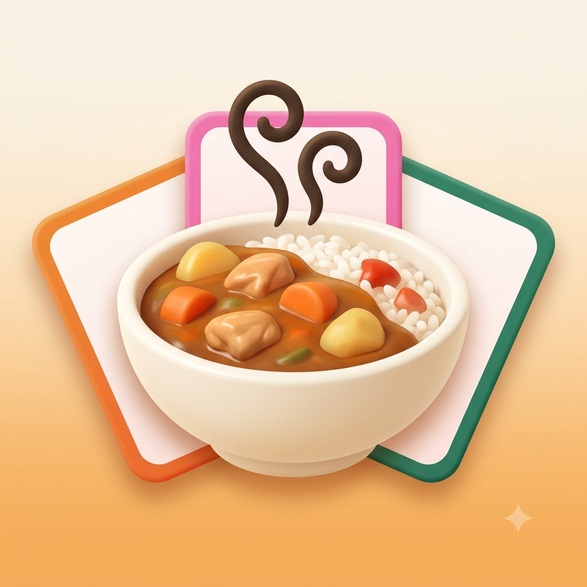

できたてキッチン Dekitate Kitchen
具材を集めて料理を完成させるカードゲーム Collect ingredients to complete dishes — a family card game
アプリについて About
「できたてキッチン」は、具材カードを6種そろえて料理を完成させる、家族向けのカードゲームです。CPU対戦と、同じ端末を回して遊ぶローカルパスアンドプレイに対応しています。
Dekitate Kitchen is a family card game where you collect six ingredient cards to complete a dish. Play against the CPU, or pass one device around for local multiplayer.
主な機能 Features
- CPU対戦：やさしい / ふつう / つよい の3段階Play vs. CPU at three levels: Easy, Normal, Hard
- ローカルパスアンドプレイ：同じ端末を2〜4人で回して対戦Local pass-and-play for 2–4 people on one device
- シリーズ：定番 / 和食 / スイーツ ＋ 全混在の4モードFour series: Classic, Japanese, Sweets, and an all-mixed mode
- 日本語・英語の2言語に対応Available in Japanese and English
- 効果音・アニメーション付き。データ収集なしSound effects and animations. No data collection
よくある質問 FAQ
オンラインで対戦できますか？Can I play online?
いいえ。オンライン対戦は対象外です。CPU対戦と、同じ端末で遊ぶローカルパスアンドプレイに対応しています。
No. Online play is not supported. The game offers CPU matches and local pass-and-play on a single device.
何人で遊べますか？How many people can play?
CPU対戦は1人から、ローカルパスアンドプレイは2〜4人で遊べます。
You can play solo against the CPU, or 2–4 people in local pass-and-play.
広告や課金はありますか？Are there ads or in-app purchases?
いいえ。完全無料で、広告もアプリ内課金もありません。
No. The game is completely free, with no ads and no in-app purchases.
音が鳴りません。There's no sound.
本体側面のマナー（消音）スイッチと音量、アプリ内の設定で効果音がオンになっているかをご確認ください。
Check your device's silent switch and volume, and make sure sound effects are enabled in the app's settings.
遊び方がわかりません。How do I play?
アプリ内の「遊び方」で基本ルールを確認できます。残り1種で「あとひとつ！」、6種そろったら「めしあがれ！」と宣言して勝利を目指します。
See “How to play” in the app for the basics. Declare “One more!” when you need a single ingredient, and “Dig in!” once all six are collected to win.
動作環境 Requirements
| 対応OSOS | iOS 18.0+ |
|---|---|
| 対応端末Devices | iPhone（縦向き）iPhone (portrait) |
| 言語Languages | 日本語 / 英語Japanese / English |
| 価格Price | 無料Free |
お問い合わせ Contact
ご質問・ご不明な点は、以下のメールアドレスまでお気軽にご連絡ください。
For any questions, please feel free to reach out by email.
ykapp.dev0123@gmail.com端末とiOSのバージョンを添えていただくとスムーズです。 Including your device and iOS version helps us respond faster.